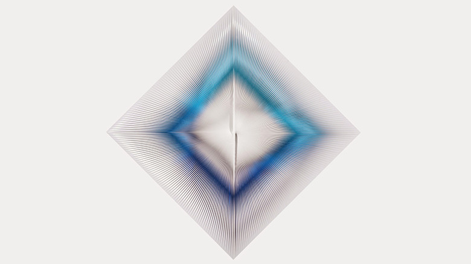

minimal

Toni Costa
-どんな人
1900年代に活躍していたアーティスト集団「グルッポN」の一員でした。裏表で色が違う塩化ビニルの素材を使って、レリーフ作品を多く作っていました。
-解説
裏表で色が違う塩化ビニルを一回ひねってつける。それを繰り返すことによって躍動感のある模様が浮かび上がります。でてくる模様の色は、ビニルのひねりによって生まれるため、鑑賞者が移動することによって、模様自体も変化していきます。
-好きなところ
写真とは違う作品でしたが、実際に実物を見たことがあります。位置によって模様が動いて見えるのが面白かったです。デジタルを使わなくてもインタラクティブな作品は作れるんだなと思いました。どうせならデジタルなやつを作りたいですが。